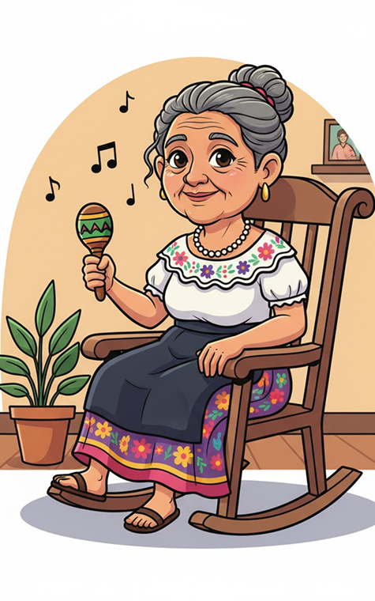
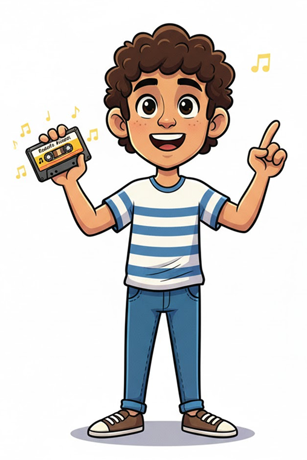

Narra el viaje de Marco Tulio Aicardi desde su niñez musical en Galeras hasta su transformación en Rodolfo Aicardi,
el ícono inmortal de la cumbia y el porro en Medellín, cuya voz se convirtió en la banda sonora de Colombia.
La historia culmina con el adolescente moderno, Mateo, quien redescubre su legado a través de un viejo casete y
fusiona su música con ritmos actuales, llevando el eco eterno de Aicardi a una nueva generación en las plazas de Medellín.
Los personajes clave son Rodolfo/Marco Tulio, su abuela en Galeras, y el joven continuador del legado, Mateo.
El joven Marco Tulio (Rodolfo Aicardi) descubre su pasión
por los sonidos en su pueblo natal,
Galeras. A los 15 años
se muda a Medellín para perseguir su sueño, donde
se convierte en un ícono de
la cumbia.
Rodolfo Aicardi se vuelve famoso y su voz se convierte en
la banda sonora de las fiestas colombianas.
Aunque
disfrutaba del éxito, su música también era su refugio personal.
A pesar de su muerte en
2007, su voz sigue viva.
Un adolescente, Mateo, encuentra un casete de Rodolfo Aicardi.
Fascinado, aprende a tocar sus
canciones, fusionando lo clásico
con lo moderno. Al final, Mateo canta en una plaza, manteniendo
vivo el legado del artista para una nueva generación.
Rodolfo Aicardi / Marco Tulio: Protagonista, cuya vida y legado musical se narran en el cómic.
Abuela de Marco Tulio: Figura inspiradora en la niñez de Rodolfo, que lo motiva a seguir su pasión por la música.
Mateo: Adolescente moderno que descubre el legado de Rodolfo y lo lleva adelante fusionando estilos musicales.